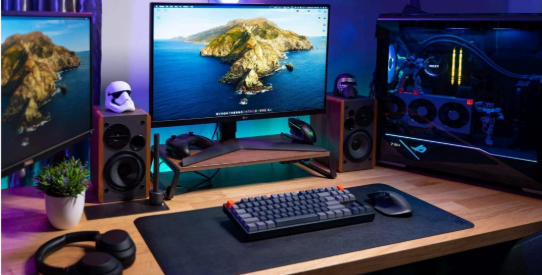
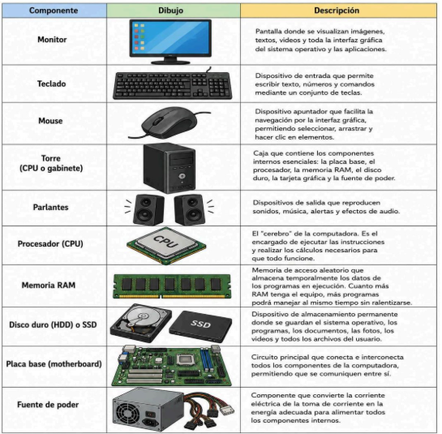
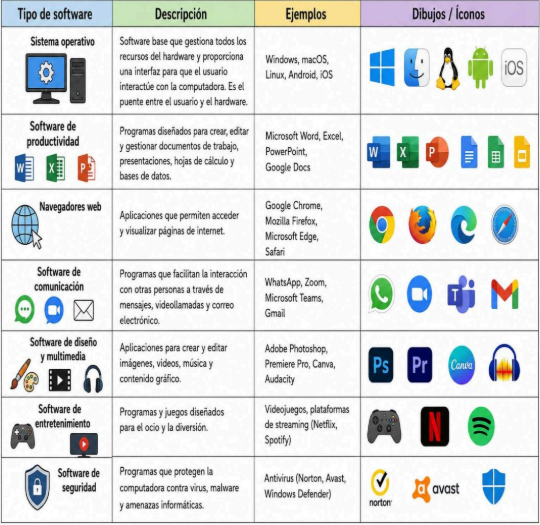

ARTÍCULO TÉCNICO
Conceptos básicos

Introducción
¿Qué es una computadora?
Una computadora es un dispositivo electrónico programable que procesa, almacena y gestiona información de manera automática. Su función principal es recibir datos de entrada, procesarlos mediante instrucciones predefinidas y entregar resultados de salida que resulten útiles para el usuario.
En la vida cotidiana, las computadoras nos ayudan a realizar una gran variedad de actividades: estudiar, trabajar, buscar información en internet, comunicarnos con otras personas, crear contenido, entretenernos y mucho más. Gracias a ellas podemos guardar grandes cantidades de información de forma organizada, crear documentos de texto, hojas de cálculo y presentaciones, editar imágenes y videos, y utilizar diferentes programas que facilitan nuestras tareas diarias de manera eficiente.
Las computadoras han evolucionado enormemente desde sus inicios. Antes eran máquinas enormes que ocupaban habitaciones enteras, pero hoy en día existen desde potentes supercomputadoras hasta pequeños dispositivos que caben en nuestro bolsillo, como los teléfonos inteligentes. A pesar de sus diferencias de tamaño y capacidad, todas comparten los mismos principios fundamentales de funcionamiento.
PARTES DE LA COMPUTADORA:

La computadora está formada por dos partes principales que trabajan en conjunto para que el equipo funcione correctamente: el hardware y el software. Ninguna de las dos puede operar sin la otra; son complementarias e indispensables.
EL HARDWARE

Es la parte física y tangible de la computadora. Es todo aquello que podemos ver, tocar y manipular con nuestras manos. Sin el hardware, el software no tendría dónde ejecutarse. Los componentes de hardware se encargan de recibir la información, procesarla, almacenarla y mostrarla al usuario.
EL SOFTWARE
El software es la parte lógica e intangible de la computadora. Está formado por el conjunto de programas, aplicaciones, sistemas operativos e instrucciones que le indican al hardware qué hacer y cómo hacerlo. A diferencia del hardware, el software no se puede tocar físicamente; existe como código escrito en lenguajes de programación que la computadora interpreta y ejecuta.
El software es lo que transforma a un conjunto de piezas electrónicas en una herramienta útil y versátil. Sin software, el hardware sería simplemente un montón de componentes sin función.
LA RELACIÓN ENTRE HARDWARE Y SOFTWARE
Es importante comprender que el hardware y el software dependen mutuamente. El hardware proporciona la infraestructura física necesaria para que el software se ejecute, mientras que el software da instrucciones precisas sobre cómo debe operar ese hardware. Por ejemplo, cuando presionas una tecla del teclado (hardware), el sistema operativo (software) interpreta esa señal y muestra la letra correspondiente en la pantalla (hardware). Sin el teclado, no podrías escribir; sin el sistema operativo, el teclado no sabría qué hacer con tu pulsación.
Esta interacción constante entre ambas partes es lo que hace posible que la computadora sea una herramienta tan poderosa y versátil en nuestra vida diaria.